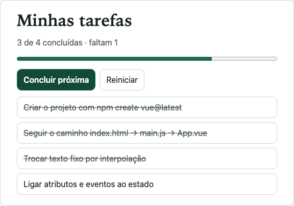

ref em ação: código, tela e Vue DevTools
App.vue · <script setup>
import { ref } from 'vue'
const titulo = ref('Minhas tarefas')
const concluidas = ref(2)
const TOTAL = 4 // constante comum: não precisa ser reativa
function concluirProxima() {
if (concluidas.value < TOTAL) concluidas.value += 1
}App.vue · <template> (trecho)
<h1>{{ titulo }}</h1>
<p class="resumo" :class="{ completo: concluidas === TOTAL }">
{{ concluidas }} de {{ TOTAL }} concluídas
</p>
<progress :value="concluidas" :max="TOTAL"></progress>
<button :disabled="concluidas === TOTAL" @click="concluirProxima">
Concluir próxima
</button>
Tela real após um clique: resumo, barra e classes das tarefas mudaram juntos.

O Vue DevTools já vem configurado pelo create-vue: botão flutuante no rodapé da página em npm run dev.
ObserveVocê não escreveu nenhum código para atualizar a barra. Por que ela mudou?